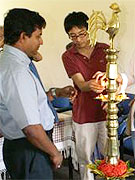
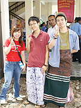

「大学で開発経済学を専攻しているため、発展途上国に何回か、行く機会はあったのですが、生活はしたことはなく、実際に生活を通して、彼らの考え方や、文化を肌で感じてみたくなったので、参加を決めました。
正直、実際にいくまで、理由は非常に漠然としておりました。
あくまでの取っ掛かりとして、大学の専攻は大いに起因していたかとは思います。
2004年に発生した津波災害により『津波の爪あとが何年かたった今でも残っているため、多くの人達が未だ貧困で苦しんでいる。』という現状を聞いたため、実際にどのような状況かを自分の目で直接見てみたくなった点もあります。
スリランカのように国内で戦争をしている国は、世界中に多く存在するが、実際に戦争国に入国できる機会は少ないため希少な機会も一つの魅力として感じていました。
低開発村視察は、首都界隈にホームステイをしている我々にとっては、スリランカ国内にいても正直、想像できない世界であり、スリランカの現状を肌で感じることが出来る非常に重要かつ希少な機会でありました。
低開発の人々がどのように趣向をこらして、日々の暮らしを乗り切り、生活し、またどのような教育を受け、子供たちは、将来どのようになっていくのか。など色々と考えさせられる場にもなりました。
村の人々は、現在も貧困に苦しんでるいる中、ワヤンバ職業訓練校で必死に職業訓練を受けおり、将来の雇用に取り組んでいる姿勢が、非常に先進的であると思いました。
同時に『現状のスリランカ』を実際に垣間見る大切な機会でありました。

また、ホテルで仕事をしている者の大半は、将来大きく(BIG)なって海外もしくは、コロンボで生活するという野望および純粋さを持っていました。
インフラも整っていない中、必死に発展をとげようとしておるが、インドという国を隣国にもっているため、なかなか発展しきれない現状。
国内の戦争が治まらず、なかなか外資を誘致できない現状。
そんなことにもめげず、笑顔で、『大丈夫、何とかなる』といえる彼らは非常にまばゆく感じております。
スリランカ人の農村部に住む人々の考え方、価値観、夢、など普段ホームステイしているときには、絶対に感じることのできない、もっと生（ナマ）なスリランカの部分を知ることができる、大切な機会と感じております。
スリランカへは、一生のうちに、確実に再度訪れる予定です。
そこでホームステイファミリー会い、スリランカの発展をこの眼で再確認が出来ればと感じております。
既に御社の多くのプログラムに参加しておるため、興味があるプログラムが新しくあれば、利用すると思います。
ホームステイに関しては、スリランカでは、生活を知る、スリランカそのものを知る。という点でとても重要に感じております。
以前、オーストラリアでホームステイをしたことがありますが、ここまで親密になれたのも、スリランカだけですし、多くのことを学べたのも、スリランカだけかと思います。
